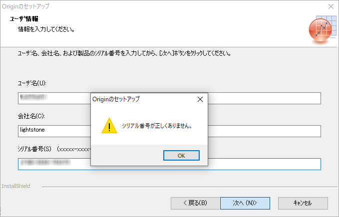

FAQ-1102 Originインストール時に「シリアル番号が正しくありません」と表示されます。どうしたらよいでしょうか？
Incorrect-Serial-Number
最終更新日:2021/5/24
Originインストール時にシリアル番号が正しくありませんとエラーメッセージが表示される場合
|
入力したシリアル番号が、OriginLabで発行したものと一致しているかを確認してください。シリアル番号の形式は、XXXXX-XXXX-XXXXXXXです。
- 手入力でなく、送付されたシリアル番号をコピーして、インストールウィザードで貼り付けることをお勧めします。
- 手入力の場合は、半角英文字で全ての文字を正確に入力してください。各パートをつなぐ"-"の文字もしっかり入力してください。
キーワード:インストール, 無効なSN, 誤ったシリアル番号